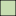

<!doctype html>
<html lang="en">
    <head>
        <meta charset="utf-8">
        <meta http-equiv="X-UA-Compatible" content="IE=edge">
        <meta name="viewport" content="initial-scale=1,user-scalable=no,maximum-scale=1,width=device-width">
        <meta name="mobile-web-app-capable" content="yes">
        <meta name="apple-mobile-web-app-capable" content="yes">
        <link rel="stylesheet" href="css/leaflet.css">
        <link rel="stylesheet" href="css/qgis2web.css"><link rel="stylesheet" href="css/fontawesome-all.min.css">
        <link rel="stylesheet" href="css/leaflet-measure.css">
        <style>
        html, body, #map {
            width: 100%;
            height: 100%;
            padding: 0;
            margin: 0;
        }
        </style>
        <title></title>
    </head>
    <body>
        <div id="map">
        </div>
        <script src="js/qgis2web_expressions.js"></script>
        <script src="js/leaflet.js"></script>
        <script src="js/leaflet.rotatedMarker.js"></script>
        <script src="js/leaflet.pattern.js"></script>
        <script src="js/leaflet-hash.js"></script>
        <script src="js/Autolinker.min.js"></script>
        <script src="js/rbush.min.js"></script>
        <script src="js/labelgun.min.js"></script>
        <script src="js/labels.js"></script>
        <script src="js/leaflet-measure.js"></script>
        <script src="data/Mojokerto_1.js"></script>
        <script src="data/LahanPotensial_2.js"></script>
        <script>
        var highlightLayer;
        function highlightFeature(e) {
            highlightLayer = e.target;

            if (e.target.feature.geometry.type === 'LineString') {
              highlightLayer.setStyle({
                color: '#ffff00',
              });
            } else {
              highlightLayer.setStyle({
                fillColor: '#ffff00',
                fillOpacity: 1
              });
            }
        }
        var map = L.map('map', {
            zoomControl:true, maxZoom:28, minZoom:1
        }).fitBounds([[-7.8212261155417595,112.02086842099288],[-7.110676839831496,112.91014481513335]]);
        var hash = new L.Hash(map);
        map.attributionControl.setPrefix('<a href="https://github.com/tomchadwin/qgis2web" target="_blank">qgis2web</a> &middot; <a href="https://leafletjs.com" title="A JS library for interactive maps">Leaflet</a> &middot; <a href="https://qgis.org">QGIS</a>');
        var autolinker = new Autolinker({truncate: {length: 30, location: 'smart'}});
        var measureControl = new L.Control.Measure({
            position: 'topleft',
            primaryLengthUnit: 'meters',
            secondaryLengthUnit: 'kilometers',
            primaryAreaUnit: 'sqmeters',
            secondaryAreaUnit: 'hectares'
        });
        measureControl.addTo(map);
        document.getElementsByClassName('leaflet-control-measure-toggle')[0]
        .innerHTML = '';
        document.getElementsByClassName('leaflet-control-measure-toggle')[0]
        .className += ' fas fa-ruler';
        var bounds_group = new L.featureGroup([]);
        function setBounds() {
        }
        map.createPane('pane_Positron_0');
        map.getPane('pane_Positron_0').style.zIndex = 400;
        var layer_Positron_0 = L.tileLayer('https://a.basemaps.cartocdn.com/light_all/{z}/{x}/{y}.png', {
            pane: 'pane_Positron_0',
            opacity: 1.0,
            attribution: '<a href="https://cartodb.com/basemaps/">Map tiles by CartoDB, under CC BY 3.0. Data by OpenStreetMap, under ODbL.</a>',
            minZoom: 1,
            maxZoom: 28,
            minNativeZoom: 0,
            maxNativeZoom: 20
        });
        layer_Positron_0;
        map.addLayer(layer_Positron_0);
        function pop_Mojokerto_1(feature, layer) {
            layer.on({
                mouseout: function(e) {
                    for (i in e.target._eventParents) {
                        e.target._eventParents[i].resetStyle(e.target);
                    }
                },
                mouseover: highlightFeature,
            });
            var popupContent = '<table>\
                    <tr>\
                        <td colspan="2"><strong>Kecamatan</strong><br />' + (feature.properties['KECAMATAN'] !== null ? autolinker.link(feature.properties['KECAMATAN'].toLocaleString()) : '') + '</td>\
                    </tr>\
                    <tr>\
                        <th scope="row">Jumlah Penduduk</th>\
                        <td>' + (feature.properties['pnddk_2032'] !== null ? autolinker.link(feature.properties['pnddk_2032'].toLocaleString()) : '') + '</td>\
                    </tr>\
                    <tr>\
                        <th scope="row">Kepadatan Penduduk</th>\
                        <td>' + (feature.properties['padat32'] !== null ? autolinker.link(feature.properties['padat32'].toLocaleString()) : '') + '</td>\
                    </tr>\
                </table>';
            layer.bindPopup(popupContent, {maxHeight: 400});
        }

        function style_Mojokerto_1_0() {
            return {
                pane: 'pane_Mojokerto_1',
                opacity: 1,
                color: 'rgba(35,35,35,1.0)',
                dashArray: '',
                lineCap: 'butt',
                lineJoin: 'miter',
                weight: 1.0, 
                fill: true,
                fillOpacity: 1,
                fillColor: 'rgba(71,146,0,0.3058823529411765)',
                interactive: true,
            }
        }
        map.createPane('pane_Mojokerto_1');
        map.getPane('pane_Mojokerto_1').style.zIndex = 401;
        map.getPane('pane_Mojokerto_1').style['mix-blend-mode'] = 'normal';
        var layer_Mojokerto_1 = new L.geoJson(json_Mojokerto_1, {
            attribution: '',
            interactive: true,
            dataVar: 'json_Mojokerto_1',
            layerName: 'layer_Mojokerto_1',
            pane: 'pane_Mojokerto_1',
            onEachFeature: pop_Mojokerto_1,
            style: style_Mojokerto_1_0,
        });
        bounds_group.addLayer(layer_Mojokerto_1);
        map.addLayer(layer_Mojokerto_1);
        function pop_LahanPotensial_2(feature, layer) {
            layer.on({
                mouseout: function(e) {
                    for (i in e.target._eventParents) {
                        e.target._eventParents[i].resetStyle(e.target);
                    }
                },
                mouseover: highlightFeature,
            });
            var popupContent = '<table>\
                    <tr>\
                        <td colspan="2"><strong>Jenis Lahan</strong><br />' + (feature.properties['NAMA_UNSUR'] !== null ? autolinker.link(feature.properties['NAMA_UNSUR'].toLocaleString()) : '') + '</td>\
                    </tr>\
                    <tr>\
                        <th scope="row">keterangan</th>\
                        <td>' + (feature.properties['keterangan'] !== null ? autolinker.link(feature.properties['keterangan'].toLocaleString()) : '') + '</td>\
                    </tr>\
                </table>';
            layer.bindPopup(popupContent, {maxHeight: 400});
        }

        function style_LahanPotensial_2_0(feature) {
            switch(String(feature.properties['NAMA_UNSUR'])) {
                case 'Pasir Darat':
                    return {
                pane: 'pane_LahanPotensial_2',
                opacity: 1,
                color: 'rgba(247,247,247,1.0)',
                dashArray: '',
                lineCap: 'butt',
                lineJoin: 'miter',
                weight: 1.0, 
                fill: true,
                fillOpacity: 1,
                fillColor: 'rgba(254,255,171,1.0)',
                interactive: true,
            }
                    break;
                case 'Semak Belukar':
                    return {
                pane: 'pane_LahanPotensial_2',
                opacity: 1,
                color: 'rgba(247,247,247,1.0)',
                dashArray: '',
                lineCap: 'butt',
                lineJoin: 'miter',
                weight: 1.0, 
                fill: true,
                fillOpacity: 1,
                fillColor: 'rgba(178,224,171,1.0)',
                interactive: true,
            }
                    break;
                case 'Kebun':
                    return {
                pane: 'pane_LahanPotensial_2',
                opacity: 1,
                color: 'rgba(247,247,247,1.0)',
                dashArray: '',
                lineCap: 'butt',
                lineJoin: 'miter',
                weight: 1.0, 
                fill: true,
                fillOpacity: 1,
                fillColor: 'rgba(61,167,90,1.0)',
                interactive: true,
            }
                    break;
                case 'Sawah':
                    return {
                pane: 'pane_LahanPotensial_2',
                opacity: 1,
                color: 'rgba(247,247,247,1.0)',
                dashArray: '',
                lineCap: 'butt',
                lineJoin: 'miter',
                weight: 1.0, 
                fill: true,
                fillOpacity: 1,
                fillColor: 'rgba(0,78,40,1.0)',
                interactive: true,
            }
                    break;
            }
        }
        map.createPane('pane_LahanPotensial_2');
        map.getPane('pane_LahanPotensial_2').style.zIndex = 402;
        map.getPane('pane_LahanPotensial_2').style['mix-blend-mode'] = 'normal';
        var layer_LahanPotensial_2 = new L.geoJson(json_LahanPotensial_2, {
            attribution: '',
            interactive: true,
            dataVar: 'json_LahanPotensial_2',
            layerName: 'layer_LahanPotensial_2',
            pane: 'pane_LahanPotensial_2',
            onEachFeature: pop_LahanPotensial_2,
            style: style_LahanPotensial_2_0,
        });
        bounds_group.addLayer(layer_LahanPotensial_2);
        map.addLayer(layer_LahanPotensial_2);
        var baseMaps = {};
        L.control.layers(baseMaps,{'Lahan Potensial<br /><table><tr><td style="text-align: center;"></td><td>Pasir Darat</td></tr><tr><td style="text-align: center;"></td><td>Semak Belukar</td></tr><tr><td style="text-align: center;"></td><td>Kebun</td></tr><tr><td style="text-align: center;"></td><td>Sawah</td></tr></table>': layer_LahanPotensial_2,' Mojokerto': layer_Mojokerto_1,"Positron": layer_Positron_0,},{collapsed:false}).addTo(map);
        setBounds();
        </script>
    </body>
</html>
